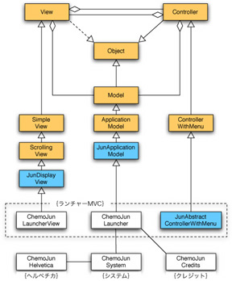
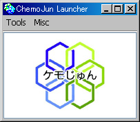

システムはすべての化学関連プログラムを管理するためのものあり、ランチャーは様々なアプリケーションを起動するためのものです。ランチャーはじゅんのアプリケーションモデル（JunApplicationModel）をスーパクラスにして作成されています。
|  |
| システムとランチャーの構造 |
ランチャーは単純にロゴを表示するだけのモデルですので、表示のためのビュー（JunDisplayView）とメニューを有するコントローラ（JunAbstractControllerWithMenu）を用いています。
|  |
| ランチャー |
システムは描画のためのヘルベチカのフォントを知っており、ランチャーはクレジット電光掲示板を知っています。